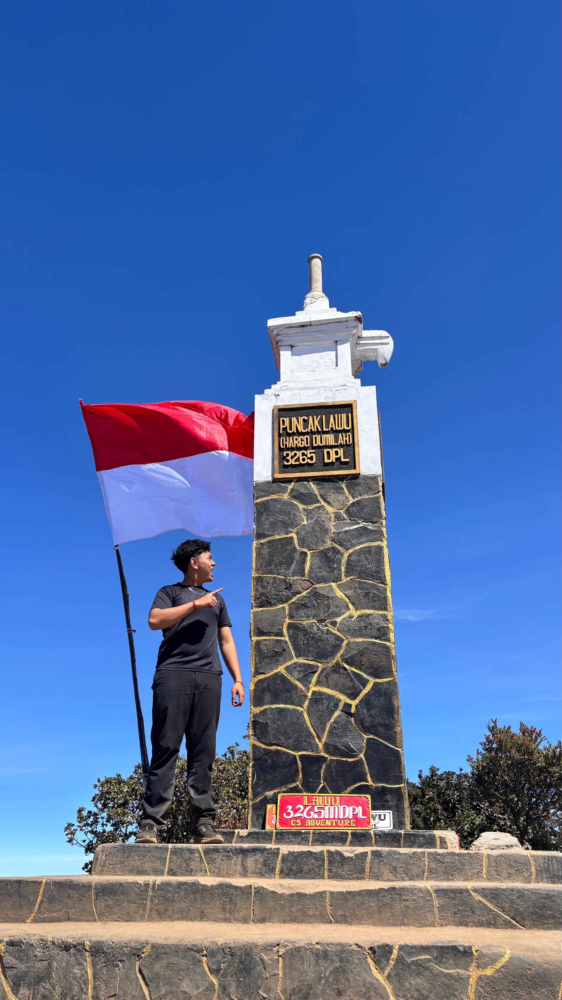

Hi, saya Agusde Weda
Mahasiswa Program Studi Informatika • Universitas Sanata Dharma
Halo! Nama lengkap saya Agusde Arya Weda Radja, saya berasal dari Bali. Saat ini saya sedang menempuh pendidikan S 1 di Universitas Sanata Dharma. Saya memilih terjun ke dunia Informatika karena memiliki minat yang mendalam pada perkembangan teknologi digital, pemrograman berorientasi objek, serta antusiasme tinggi dalam merancang dan membangun sebuah aplikasi fungsional yang solutif.

Keahlian
Beberapa bahasa pemrograman dan tools yang sedang saya pelajari dan kembangkan di perkuliahan:
Hobi
- Bermain futsal untuk menjaga kebugaran fisik
- Bermain game strategis & eksplorasi teknologi
- Mendengarkan musik untuk relaksasi saat coding
Tujuan
- Menyelesaikan studi kuliah tepat waktu dengan hasil maksimal
- Mendapatkan Indeks Prestasi (IPK) yang memuaskan
- Berkarier profesional sebagai Software Developer atau UI/UX Enthusiast
Biodata Akademik
| Nama Lengkap | Agusde Arya Weda Radja |
|---|---|
| Asal Daerah | Bali, Indonesia |
| Perguruan Tinggi | Universitas Sanata Dharma |
| SMA | SMA N 2 Negara |
| SMP | SMP N 2 Pekutatan |
| SD | SD N 2 Pengeragoan |